RTESArenaAssist to aplikacja, która wspiera cię podczas gry w The Elder Scrolls: Arena. Obok gry pokazuje tłumaczenia, mapy, dziennik, log, zarządzanie zapisami, przechwytywanie zrzutów ekranu, słownik i podręcznik.
Zrzuty ekranu wykonano w Assist w języku interfejsu, z motywem „Ciemny”, ustawieniami domyślnymi i bez połączenia. Po połączeniu wygląd zmienia się zależnie od bieżącego ekranu Areny i stanu gry.
Podstawowy sposób korzystania z Assist: uruchom Arenę, połącz się z Assist i naciśnij przycisk ⊞, aby wejść w tryb układu i grać. W trybie układu możesz ustawić obok siebie ekran gry w DOSBox oraz karty Assist (tłumaczenie, mapę i inne) na jednym ekranie, dzięki czemu sprawdzisz je bez przełączania klawiszami Alt+Tab.
Szczegóły ustawień znajdziesz na stronie „Okno ustawień” w tym podręczniku.
Wersja publiczna nie zawiera oryginalnych danych tekstowych Areny. Przy pierwszym uruchomieniu Assist tworzy pliki tłumaczeń na podstawie folderu Areny na twoim komputerze.
Najpierw wybierz język interfejsu Assist. Wybrany język zaczyna działać od razu na tym ekranie.
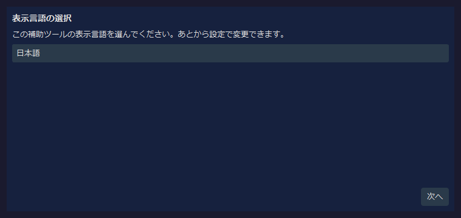
| Element | Opis |
|---|---|
| Lista rozwijana języka | Wybiera język interfejsu Assist. Ten ekran oferuje tylko japoński, angielski i Español. Aby użyć innego języka, wybierz go po uruchomieniu w pozycji „Język” na karcie „Ogólne” okna Ustawienia. |
| Dalej | Przechodzi do wskazania folderu Areny. |
Jeśli przejdziesz dalej przy uruchomionej Arenie, Assist wykryje miejsce instalacji automatycznie na podstawie działającej gry. Jeśli wykrycie się nie powiedzie, wskaż folder danych Areny przyciskiem Przeglądaj….
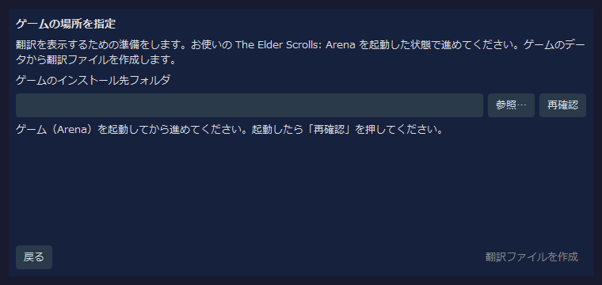
| Pozycja | Opis |
|---|---|
| Folder instalacji gry | Wskaż folder ARENA Areny. |
| Przeglądaj… | Wskazuje folder Areny w oknie wyboru folderu. |
| Sprawdź ponownie | Ponownie wykrywa działającą Arenę. |
| Utwórz pliki tłumaczeń | Gdy zostanie znaleziony prawidłowy folder Areny, przechodzi do tworzenia plików tłumaczeń. |
Assist tworzy pliki tłumaczeń na podstawie danych z folderu Areny. Po zakończeniu otwiera się okno główne.
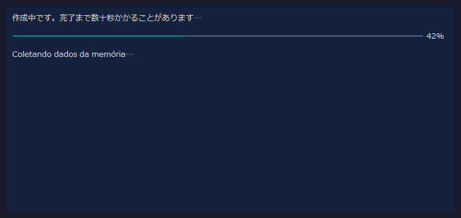
Podczas tworzenia plików widać pasek postępu i bieżący krok. Dane są odczytywane także z działającej Areny, więc nie zamykaj jej do końca procesu.
Assist ma u góry pasek połączenia, pośrodku obszar kart, a na dole pasek stanu.
Tuż po uruchomieniu Assist nie jest połączony. Przy działającej Arenie / DOSBox naciśnij przycisk Połącz w prawym górnym rogu.
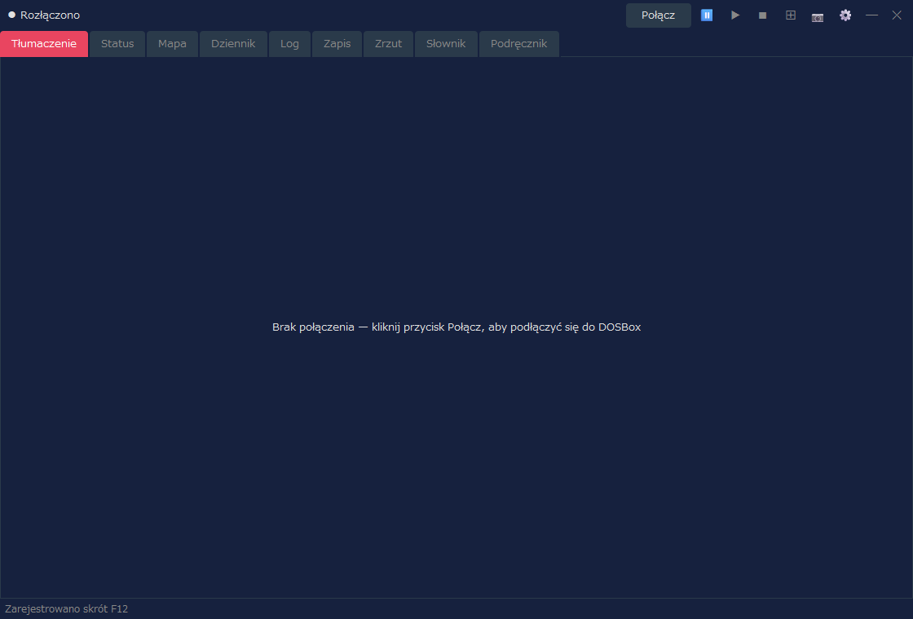
| Obszar | Opis |
|---|---|
| Stan połączenia | Pokazuje Rozłączono, a po połączeniu nazwę rozpoznanego ekranu, nazwę IMG itp. |
| Połącz / Rozłącz | Łączy z Areną w DOSBox albo rozłącza. |
⏸ / ▶ / ■ | Wstrzymuje / wznawia / zatrzymuje czytanie na głos. Czytanie na głos staje się dostępne po włączeniu go na karcie „Czytanie na głos” okna Ustawienia (domyślnie jest wyłączone). |
⊞ | Przełącza tryb układu. Kliknij prawym przyciskiem myszy, aby otworzyć menu układu. |
📷 | Zapisuje zrzut ekranu. W trybie układu cały układ zostaje zapisany jako jeden obraz. Gdy fokus ma ekran gry (DOSBox), skrót klawiszowy (domyślnie F12) zapisuje zrzut w taki sam sposób. |
⚙ | Otwiera okno Ustawienia. |
Komunikat „Zarejestrowano skrót F12” widoczny na pasku stanu tuż po uruchomieniu informuje, że skrót klawiszowy zrzutu jest gotowy do użycia. Klawisz możesz zmienić na karcie „Ogólne” okna Ustawienia.
Po połączeniu nazwa rozpoznanego ekranu jest widoczna na lewym końcu paska połączenia. Poniższy przykład pokazuje połączenie z ekranem tytułowym Areny.
Nazwa IMG używanego przez dany ekran jest pokazana także na prawo od nazwy ekranu (nie pojawia się na ekranach bez IMG, takich jak ekran tytułowy). Na karcie „Wyświetlanie” okna Ustawienia możesz wybrać, czy pokazywać nazwę ekranu i nazwę IMG.
Assist jest zaprojektowany do pracy w trybie układu. Karty działają także w zwykłym oknie, ale w trybie układu możesz ustawić na jednym ekranie grę, tłumaczenie, mapę, log i inne elementy i sprawdzać je razem.
W układzie domyślnym ekran gry DOSBox jest po lewej, główne karty Assist po prawej, a panel uzupełniający na dole. Podczas gry możesz po prawej sprawdzać mapę lub dziennik, a tłumaczenie bieżącego ekranu na dolnym panelu lub na karcie Tłumaczenie.
| Działanie | Opis |
|---|---|
Kliknięcie lewym przyciskiem ⊞ | Włącza / kończy tryb układu. |
Kliknięcie prawym przyciskiem ⊞ | Pozwala wybrać formę układu, róg ustawienia, tryb śledzenia, ponowne ułożenie, zawsze na wierzchu i inne opcje. |
📷 | W trybie układu zapisuje cały układ, razem z DOSBox i Assist, jako jeden obraz. |
Rozłącz | Rozłącza z Areną. Łatwiej uporządkować ekran, jeśli przed rozłączeniem zakończysz tryb układu. |
Zrzut ekranu każdej karty pokazuje, jak zorganizowany jest ekran. Po połączeniu wygląd jest aktualizowany zależnie od bieżącego ekranu Areny i stanu gry.
To główna karta, która pokazuje tłumaczenie bieżącego ekranu. Widok zmienia się zależnie od sytuacji: ekran tytułowy, tworzenie postaci, rozmowy, budynki, przedmioty, zaklęcia i tak dalej.

| Widok | Opis |
|---|---|
| Tłumaczenie | Pokazuje tłumaczenie bieżącego ekranu lub zdarzenia. |
| Oryginał | Zależnie od ustawień pokazuje także odpowiadający mu oryginalny tekst angielski. |
| Widoki dedykowane | Listy klas, listy ras, wyposażenie, listy budynków, listy zakupów i tym podobne przełączają się na dedykowany, czytelny widok. |
Na karcie „Informacje o walce” w ustawieniach możesz też pokazywać informacje o walce na karcie Tłumaczenie. Wybierz „Walka i zwykły widok” lub „Pełny widok walki”, a następnie Tekst lub Paski wrogów. Domyślnie opcja jest wyłączona, co zachowuje zwykły wygląd karty Tłumaczenie.
Ta karta pokazuje atrybuty i kondycję postaci. Po stworzeniu postaci lub po połączeniu w trakcie gry wyświetlane są informacje o statusie.
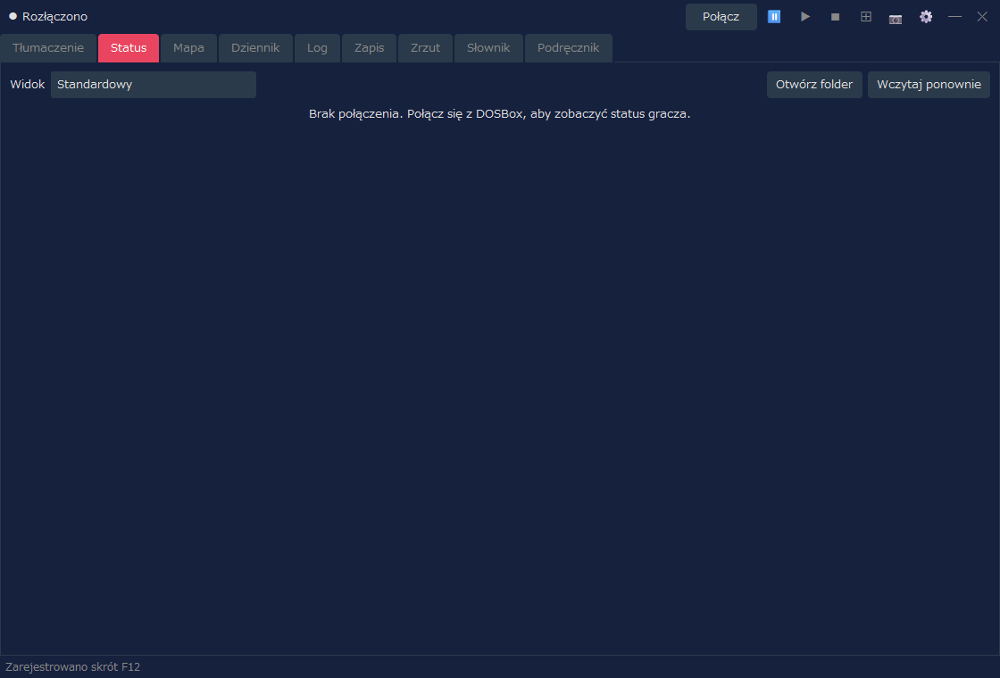
| Widok | Opis |
|---|---|
| Widok | Wybierz „Standardowy” (dotychczasowy wygląd) lub jeden z wzorów (kart postaci). Ekran statusu i rozdzielanie punktów atrybutów na karcie Tłumaczenie także używają widoku wybranego tutaj. |
| Atrybuty | Pokazuje główne atrybuty, takie jak Siła i Inteligencja. |
| Wartości kondycji | Pokazuje HP, zmęczenie, Punkty Magii i tym podobne. |
| Zmiana wartości | Operacje takie jak zmiana atrybutów są dostępne tylko po jawnym włączeniu ustawień cheatów (w widoku „Standardowy”). |
Ta funkcja pokazuje status we wzorze według twojego wyboru. Jeśli w polu „Widok” wybierzesz cokolwiek innego niż „Standardowy”, status zostanie pokazany w wybranym wzorze. Wzór to plik HTML (szablon); w zestawie jest 8 wzorów. Możesz też stworzyć własny. Niektóre wzory pokazują twarz i pełną sylwetkę (razem z wyposażeniem), kondycję postaci (choroba, trucizna, paraliż i tym podobne) oraz wartość pancerza każdej części ciała (wartość wyliczana z wyposażenia; im niższa, tym lepsza ochrona). Twarz i pełna sylwetka powstają z plików twojej Areny.
| Element | Opis |
|---|---|
| Otwórz folder | Otwiera folder na własne karty postaci (pliki HTML), czyli character_sheets w tym samym miejscu co RTESArenaAssist.exe. Przy pierwszym otwarciu zostają tam umieszczone kopie wzorów z zestawu. Pliki, które tam umieścisz, pojawiają się na liście „Widok” z dopiskiem „(folder)”. |
| Wczytaj ponownie | Ponownie wczytuje karty postaci z folderu. Naciśnij po zmianie pliku. |
Listę wzorów z zestawu, sposób działania kart postaci oraz wartości, które możesz wstawiać, i sposób ich zapisu znajdziesz na stronie „Wzory statusu (karty postaci)” w tym podręczniku.
Ta karta pokazuje automapę lochów, miast, pól, wnętrz i tym podobnych. Widok jest aktualizowany zgodnie z twoim bieżącym położeniem w grze.
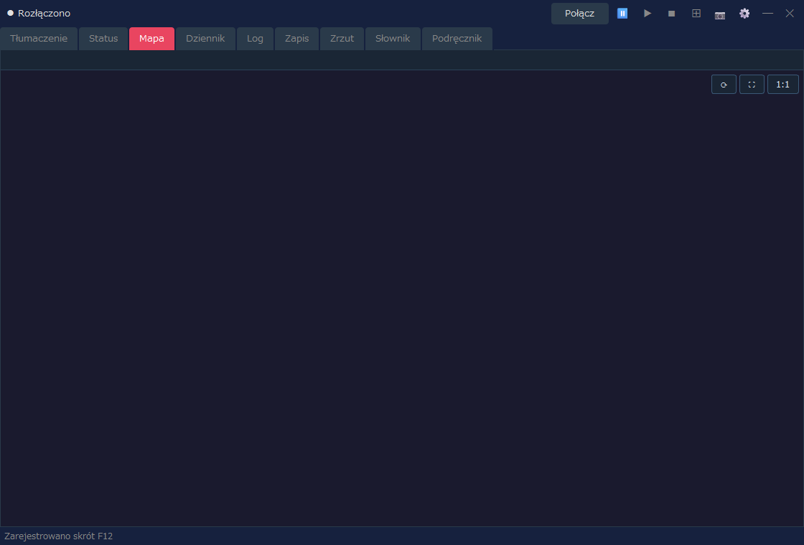
| Widok | Opis |
|---|---|
| Bieżące położenie | Pokazuje bieżącą mapę i położenie na podstawie stanu połączonej gry. |
| Automapa | Rysuje zbadane obszary, ściany, wejścia, ukształtowanie terenu pól i tym podobne. |
| Ustawienia wyświetlania | Siatkę, współrzędne chunków, rozszerzony widok pól i inne elementy możesz dostosować w oknie Ustawienia. |
Ta karta pozwala czytać w języku interfejsu to, co jest zapisane w dzienniku gry (Dziennik).
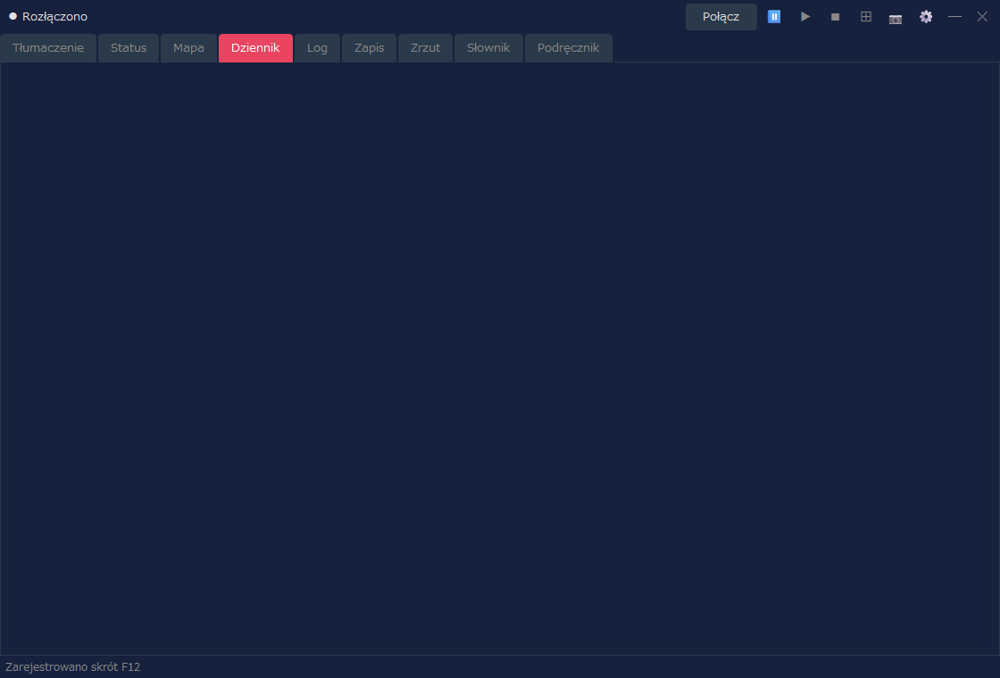
| Widok | Opis |
|---|---|
| Data i nagłówek | Pokazuje datę i streszczenie każdego wpisu dziennika. |
| Treść | Pokazuje treść dziennika w języku interfejsu. |
| Aktualizacje | Gdy dziennik w grze zostanie zaktualizowany, widok Assist również się aktualizuje. |
Ta karta pozwala przejrzeć jako historię tłumaczenia, które pokazał Assist. Przydaje się, gdy chcesz ponownie przeczytać fragment, który ci umknął.
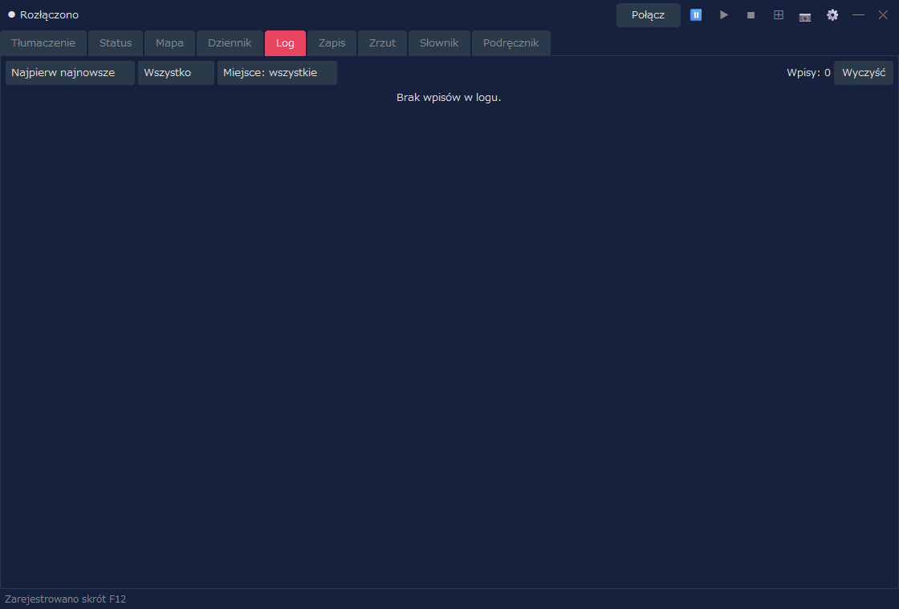
| Element | Opis |
|---|---|
| Kolejność sortowania | Przełącza między „Najpierw najnowsze” a „Najpierw najstarsze”. |
| Filtr | Zawęża log według kategorii lub miejsca. |
| Wyczyść | Czyści wyświetlany log. |
Jeśli włączysz zapisywanie dziennika walki i coś zostało zapisane, w karcie Log możesz przełączać się między „Dziennik zwykły” a „Dziennik walki”. Jeśli dziennika walki nie ma, jak dotąd widoczny jest tylko dziennik zwykły.
Ta karta zarządza slotami zapisu i kopiami zapasowymi Areny. Wspiera operacje na danych zapisu, takie jak automatyczna kopia wykonywana przed przywróceniem.
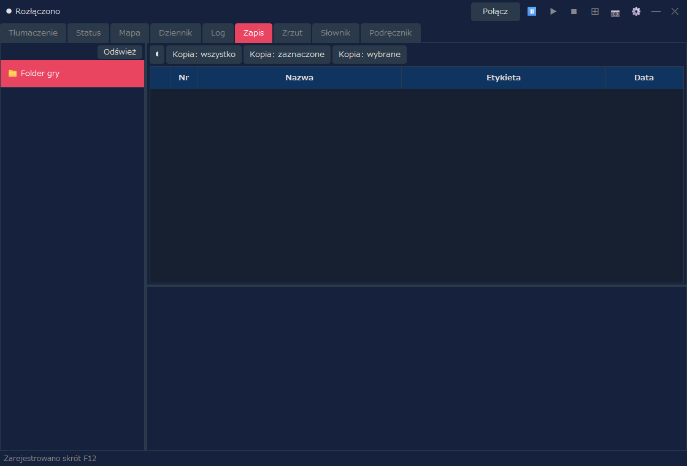
| Element | Opis |
|---|---|
| Lista slotów | Wyświetla sloty zapisu Areny. |
| Kopia zapasowa | Tworzy kopię zapasową wybranego zapisu. |
| Przywróć | Przywraca dane zapisu z kopii zapasowej. |
| Usuń | Usuwa niepotrzebne kopie zapasowe lub zapisy. |
Ta karta pozwala sprawdzić zrzuty ekranu zapisane przyciskiem 📷. Można tu otwierać także obrazy wykonane w trybie układu.
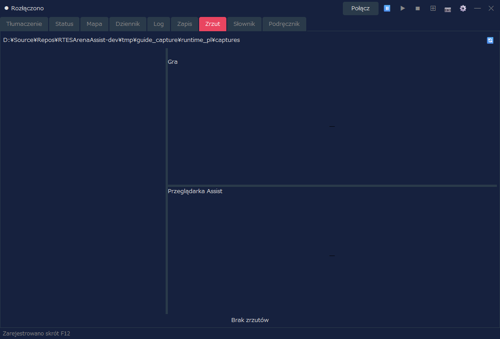
| Element | Opis |
|---|---|
| Lista | Pokazuje zapisane zrzuty. |
| Podgląd | Pozwala sprawdzić wybrany obraz. |
| Blokada | Chroni przed usunięciem obrazy, które chcesz zachować. |
| Usuń | Usuwa wybrany obraz lub niepotrzebne obrazy. |
Ta karta przeszukuje słownik tłumaczeń Assist i tekst lochów. Możesz jej użyć do sprawdzania słów i zdań, które pojawiają się w grze.
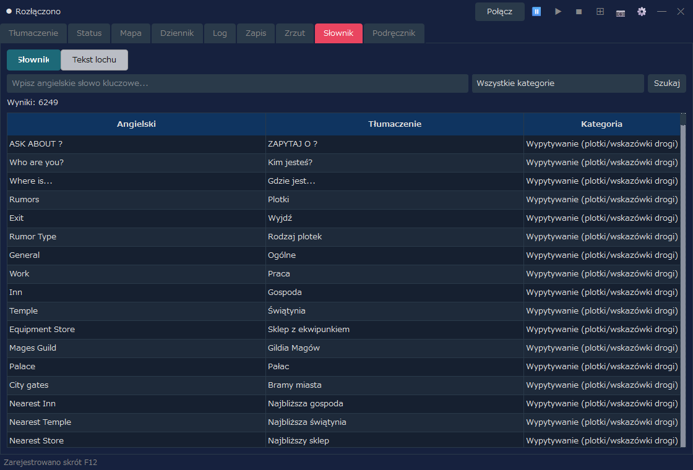
| Tryb wyświetlania | Opis |
|---|---|
| Słownik | Wyszukuje według angielskiego słowa kluczowego, tłumaczenia i kategorii. |
| Tekst lochu | Wyszukuje i pokazuje tekst lochów pochodzący z INF. |
Ta karta pozwala czytać w języku interfejsu objaśnienia podstawowej obsługi i systemów Areny oraz objaśnienia funkcji Assist. Korzystaj z niej, gdy podczas gry chcesz sprawdzić sterowanie lub pojęcia.
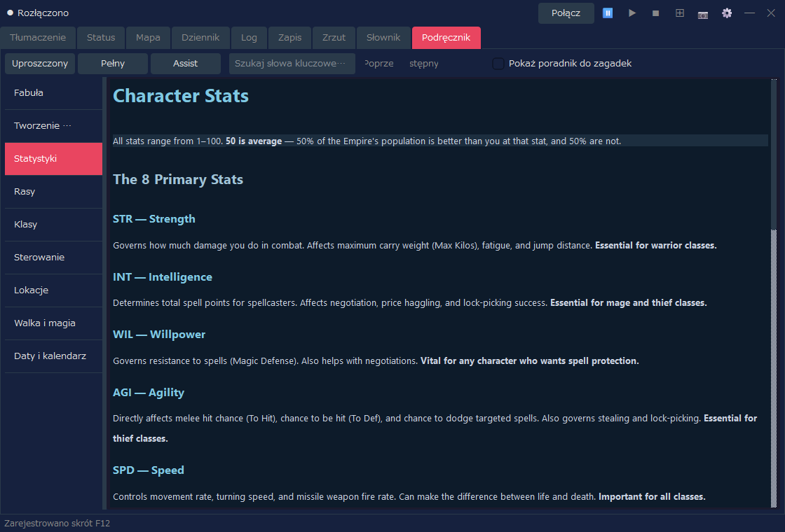
| Element | Opis |
|---|---|
| Uproszczony / Pełny / Assist | Przełącza wyświetlaną zawartość (zobacz tabelę poniżej). |
| Wyszukiwanie słowa kluczowego | Przeszukuje podręcznik. |
| Lista po lewej | Przełącza między rozdziałami, takimi jak Fabuła, Tworzenie postaci, Sterowanie oraz Walka i magia. |
| Przełącznik | Zawartość | Języki |
|---|---|---|
| Uproszczony | Objaśnienie gry (9 rozdziałów) | 12 języków |
| Pełny | Tłumaczenie oficjalnego podręcznika (widoczne po zaimportowaniu paczki tłumaczenia) | Obecnie tylko japoński |
| Assist | Objaśnienie funkcji Assist (Podstawowa obsługa, Okno ustawień, Wzory statusu (karty postaci)) | 12 języków |
Wersja pełna (tłumaczenie oficjalnego podręcznika)
W trybie „Pełny” możesz czytać tłumaczenie oficjalnego podręcznika (Przewodnika gracza i jego dodatku). Tłumaczenia są dystrybuowane oddzielnie od głównej aplikacji, jako paczka tłumaczenia dla każdego języka interfejsu (RTESArenaAssist-manual-<język>.zip) na stronie pobierania podręcznika (obecnie tylko japoński). Przy pierwszym użyciu zaimportuj paczkę według poniższych kroków.
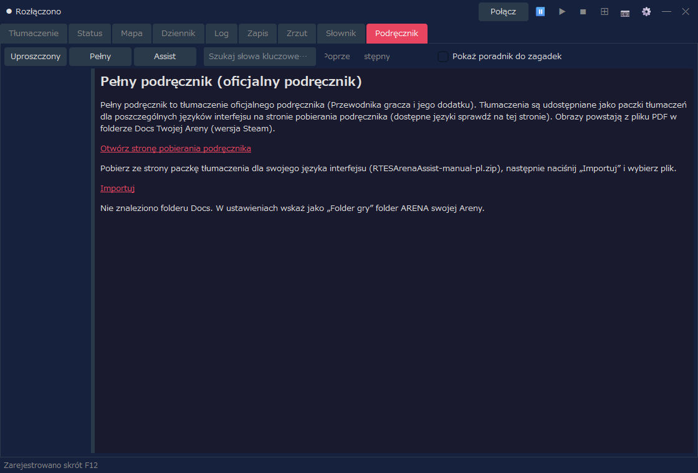
Obrazy w podręczniku powstają z pliku Player Guide.pdf w folderze Docs twojej Areny (wersja Steam). Jeśli plik PDF nie zostanie znaleziony albo jest w innej wersji, widoczny jest tylko tekst. Sprawdź „Folder gry” w ustawieniach i naciśnij „Odbuduj obrazy”, a obrazy też zostaną pokazane. Po imporcie możesz usunąć pobrany plik. Sam Assist nie łączy się z internetem (pobieranie odbywa się w twojej przeglądarce).
W trybie „Pełny” widoczny jest też odnośnik, który otwiera oficjalny podręcznik (angielski PDF) z folderu Docs. Gdy językiem interfejsu jest angielski, zamiast paczki tłumaczenia pokazywany jest tylko ten odnośnik.
Połącz w prawym górnym rogu Assist, aby połączyć się z Areną / DOSBox.⊞, aby wejść w tryb układu.📷 lub skrótem klawiszowym (domyślnie F12).⊞, a w razie potrzeby naciśnij Rozłącz.Rozmiar wyświetlania w trybie układu, formę układu, panel tłumaczenia, folder zrzutów i inne opcje możesz dostosować w oknie Ustawienia. Aby używać czytania tłumaczeń na głos, włącz je także na karcie „Czytanie na głos” okna Ustawienia.